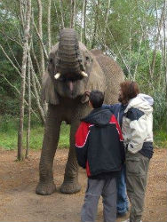
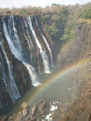

Assignment 2 - Web Design/Elements
Class Schedule
| Period | Class | Teacher | Reason for Taking the Class |
|---|---|---|---|
| 1 | Anatomy and Physiology | Laurel Black | I am interested in how the body works. |
| 2 | Economy | Wendi Wise | I think Economy is an important thing to know about. |
| 5 | AP Statistics | Hector Morales | Math is fun and this is the only math class I can take. |
| 6 | AP English | Eleanor Campbell | I enjoy reading and writing stories and poetry. |
| 7 | Computer Science | Paul Ottum | I plan on majoring in Computer Science. |
| 8 | AP Physics | Hector Morales | Physics is like applied Math, which as stated before is fun. |
Plans After High School
College
The main thing I plan to do after high school is attend college. I have actually already applied to six colleges:
I have listed them here in an unordered list* because, as of now, I do not know which I want to attend so it displays the. I have already been accepted to Rose Hulman, but I was differed by MIT and Caltech. I am now just waiting on the final decisions as well as financial aid to make my final choice. I am still hoping to get into Caltech as my main choice because it is a small school (much like SST) and has an amazing engineering program. By going to college right after high school, I will be able to get into the work force faster to make more money. Here are a couple pictures from my visits to the various colleges:
Take a Year Abroad
If I decide to not immediately go to college, I could also take a year off to travel abroad. My parents are currently planning to go abroad to Asia and Australia for a year because every five years, they like to travel for a year. By doing this, I would get to see more of the world and have a lot of fun before the four years of work at college. For the last couple of travelling years, we have travelled to South America and Africa/Eastern Europe. Here are a couple of pictures from my trip to Africa:
 After travelling, we wrote a book about South America called BYOC: South America. We also managed to get it on Amazon, which is pretty neat!
Top 10 Attributes to have as a Student
A good student:
- Is Dedicated to their Goals
- Wants to Learn
- Understands Concepts instead of Memorizing Values
- Strives to Produce Good Quality Work
- Has a Good Work Ethic
- Is Punctual
- Has Good Time Management
- Uses His Resources Well (Teachers and Time)
- Works Well with Others
- Is Organized
For me, dedication is the most important attribute for a student because if you are dedicated to your goals, the rest of the attributes will follow. You will want to learn more and work much harder if you are tying to work toward something. The careers portal lists "perceptiveness", the ability to identify an ambition and take the right road to achieve it, as one of the top 5 attributes of a successful student. For the same reasons, it is important that a student wants to learn or else they will not have any drive to do work. Fisk College even listed "committed to learning" and "lifelong learners"on their list of characteristics of an honors student, showing how important learning is to being a good student.
The next two elements are less attributes and more important things to focus on. A good student should learn the concepts of their studies instead of just memorizing how to do problems based around them. There is no reason to know how to do problems when you have no idea why your method works or what the answers mean. Understanding concept is true learning as opposed to just memorization. Everyone should also try their best on every assignment because if you don't try, you will never improve or get useful criticism. It is important to want to do well in order to be able to do well. As Kirkwood College states, successful students "take time to produce a final product that looks good and shows pride in their work."
The last few characteristics are just important things a student should try to have but they are less important than the first four. If you focus on the first few the rest are just small thing you can do to improve your own abilities.